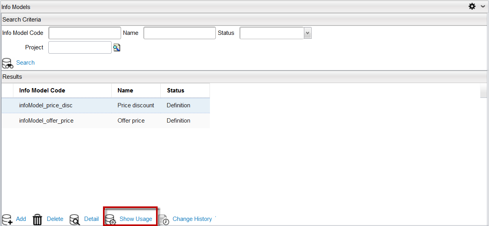
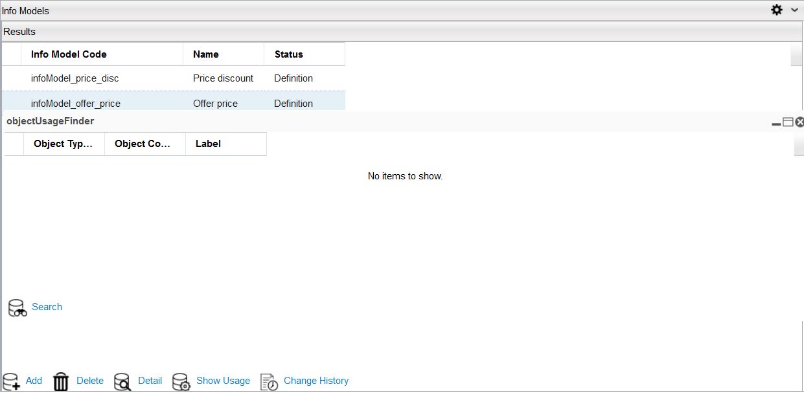

Show Usage of an Info Model
To view the usage of an info model, follow these steps:
Note: A project must be opened to see the usage of an info model.
- In Catalog Designer application, navigate to Designer > Info Models menu.
- The Info Models Search Criteria dialog appears. Search for an info model.
- Select an info model from the result list in the Results area.
- Click the Show Usage button located at the bottom of the dialog.

- The objectUsageFinder page indicates where that selected info model is being used. In this example, the selected info model is currently not being used.

|